A series of three [webzines] about curiousity and adventure through the lens of the Australian stockman, in addition to being a personal tribute to the Aboriginal people and their culture.
Typeface — Kaerukaeru, Courier, 123 and...
Programming — HTML · CSS
Web Development
3.9 MB | English
The Hague, December 2024
Programming — HTML · CSS
Web Development
3.9 MB | English
The Hague, December 2024
 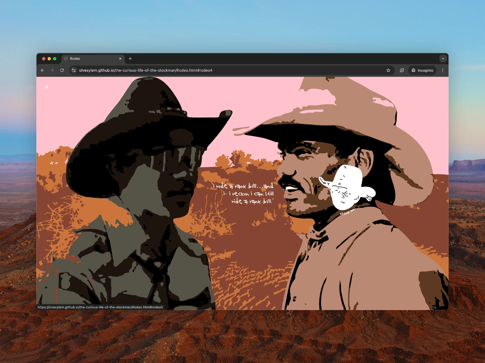
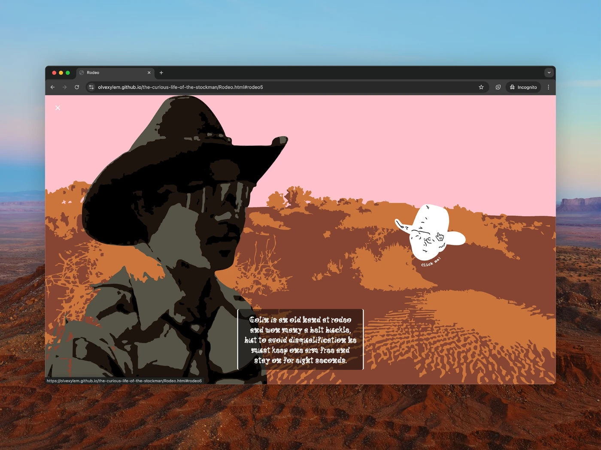
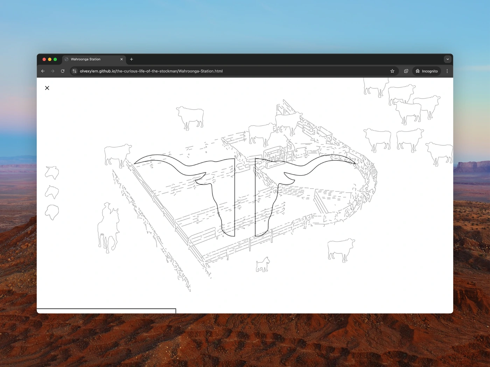
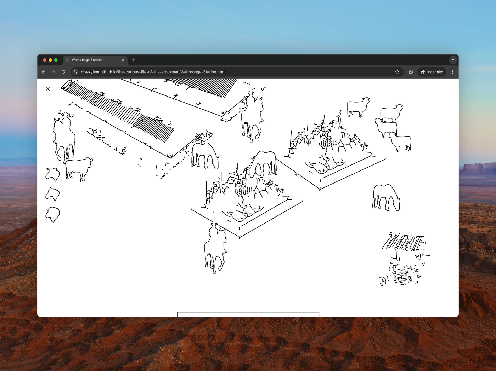
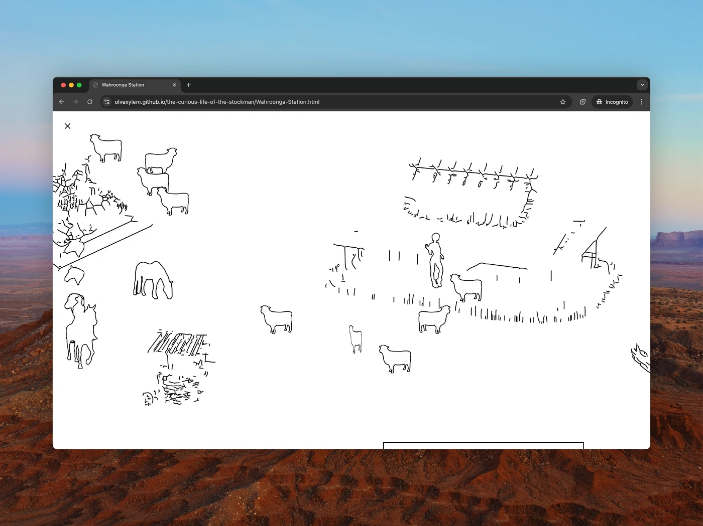
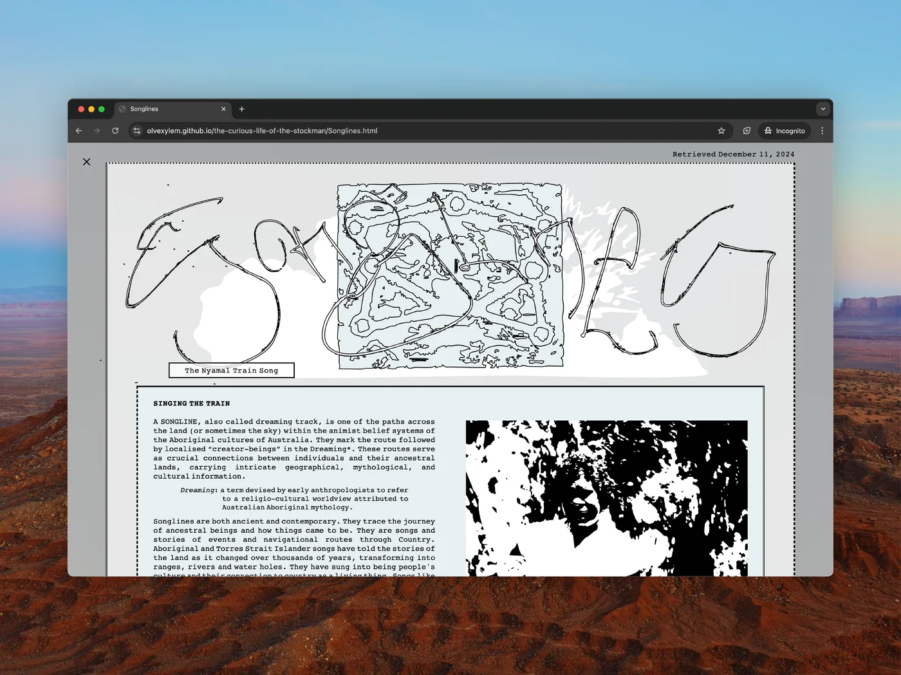
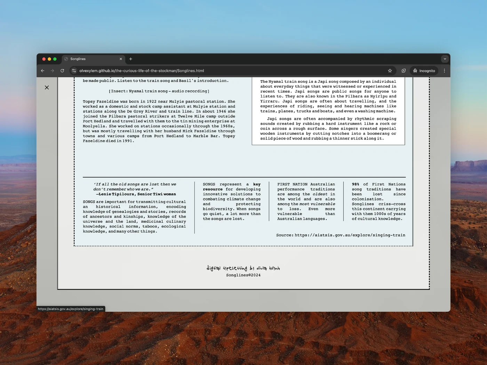
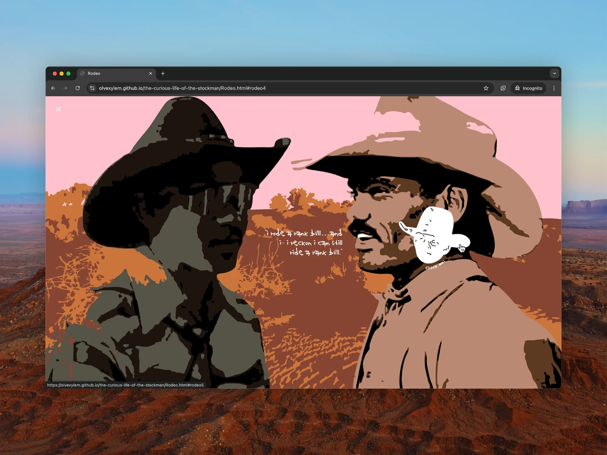
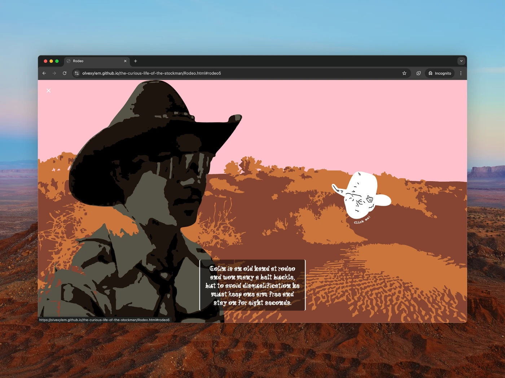
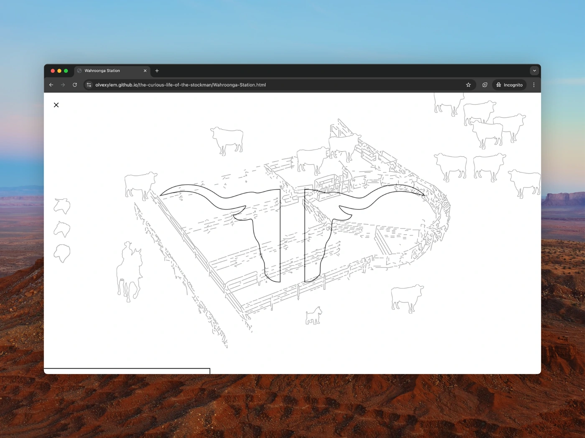
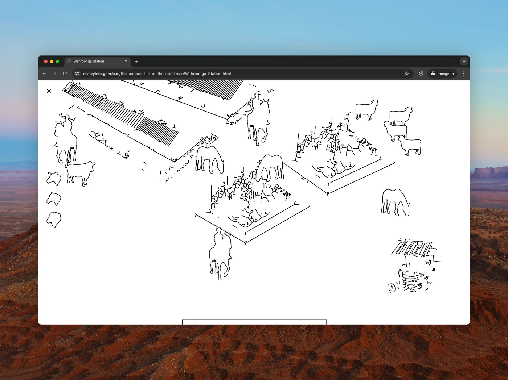
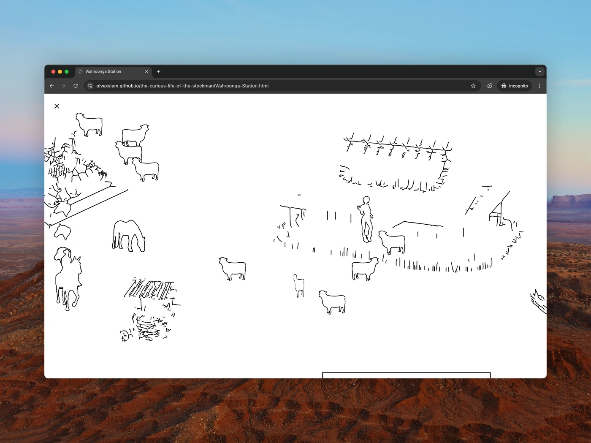
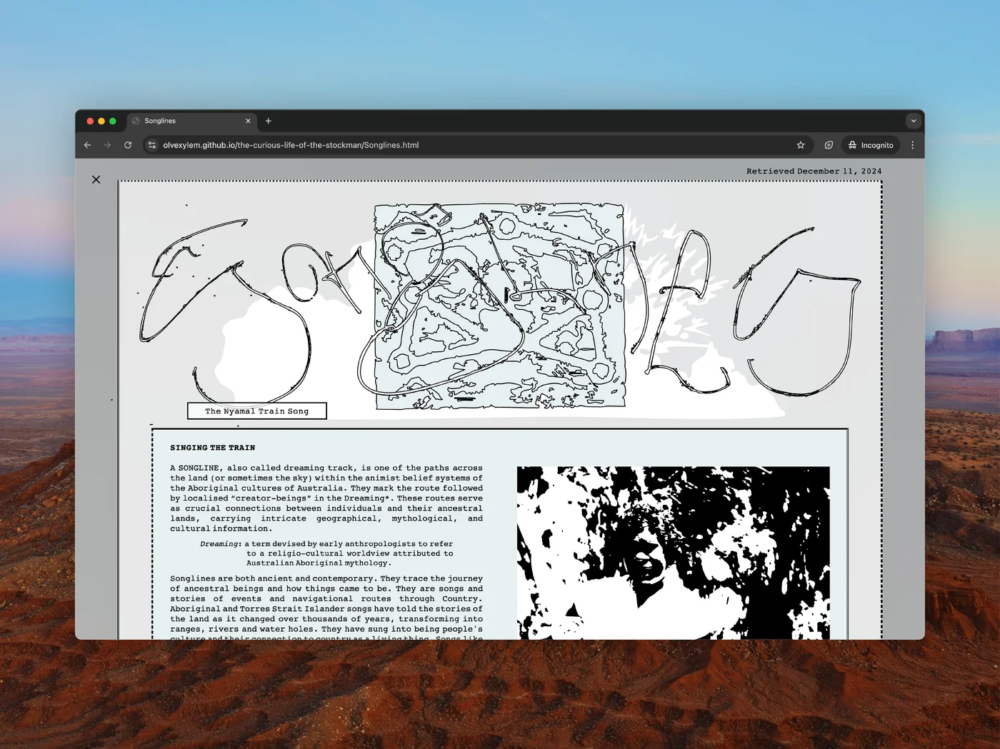
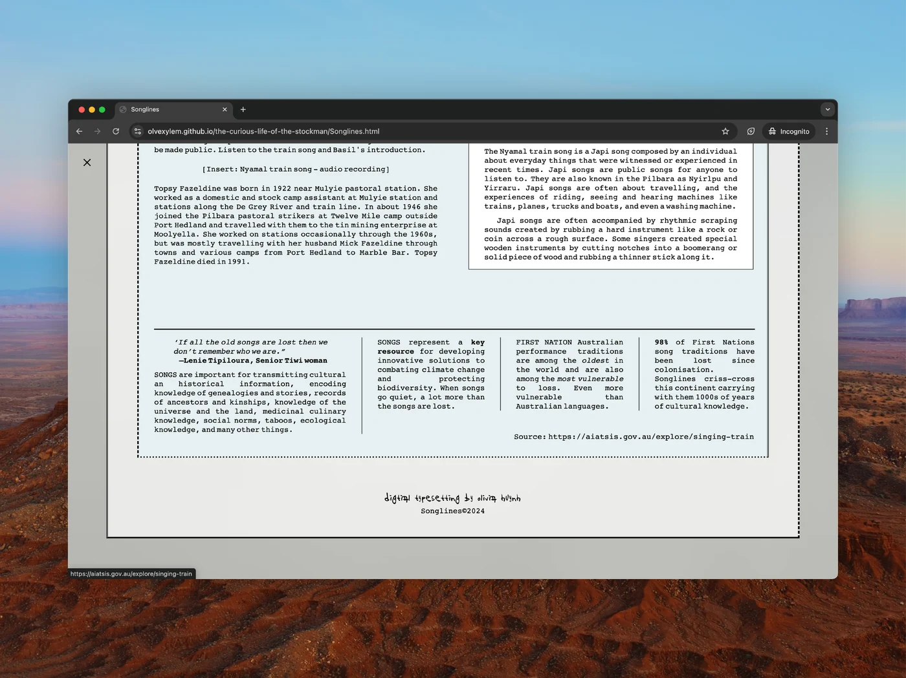